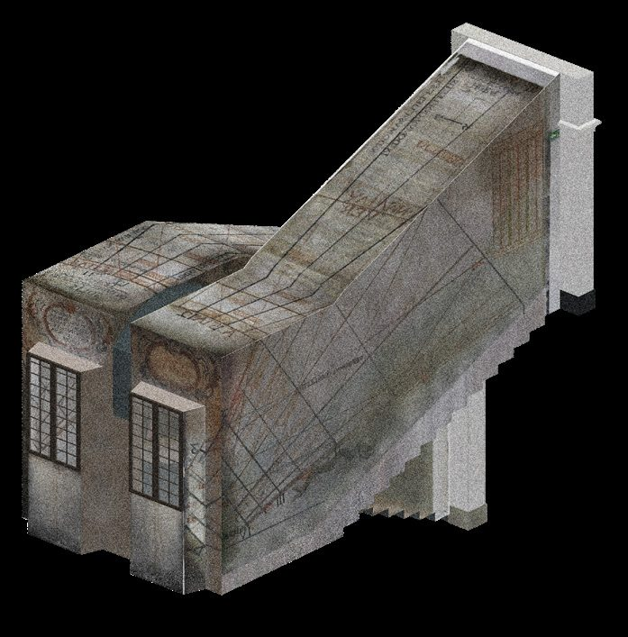
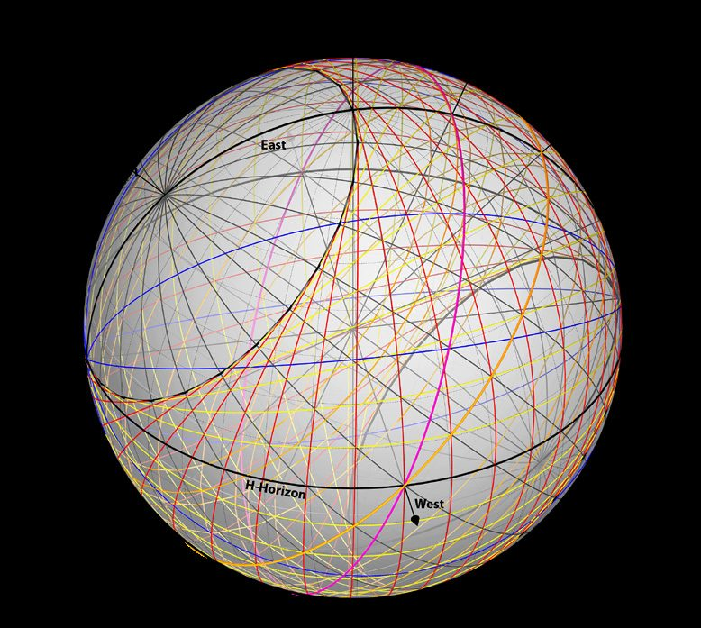

As-found104 M-point photogrammetric mesh.
As-intendedideal celestial sphere at φ = 45.1885°.
Resultclose agreement; gaps only where the light never reaches the ceiling.
Chapter II · 6
The Ideal Sphere Meets the Scan
Overlay the hundred-million-point scan on the projected ideal sphere: Bonfa's 1673 lines hold to survey tolerance.
The final test of Chapter II overlays the two models of the room: the photogrammetric mesh — the dial as it is now — and the projection of the ideal celestial sphere into the same interior — the result Bonfa was aiming at. Every line system is compared, colour by colour.

The two agree closely. “A remarkable relative precision exists,” the thesis concludes, “between the lines drawn by Father Bonfa in the 17th century and the lines derived from the 3-D model.” Where they diverge, the reason is physical: the stair rises steeply, so at certain times of year the reflected light simply cannot reach the upper ceiling, and Bonfa could not draw what he could not see cast. Elsewhere, edited and re-drawn lines are still visible to the naked eye — evidence of a trial-and-error process carried out at full scale, on less than 100 m², and still legible a century after the last restoration.

The verdict is about method as much as about one dial. Maignan's catoptric-sphere approach — personal, unorthodox, three and a half centuries old — reconstructs a real room to survey tolerance. And the exercise re-reads Bonfa himself: the dial “is equivalent to an efficient scientific study,” proof of “Jesuit Father Jean Bonfa's skill in mathematics and dedication.”
The thesis is careful about its own limits: it is “an imperfect summary” against the depth of the site. How the tables were composed, and the history behind Bonfa's commission, are left open for further work. What it does settle is that the invisible geometry can be recovered — and, in Chapter III, handed back.